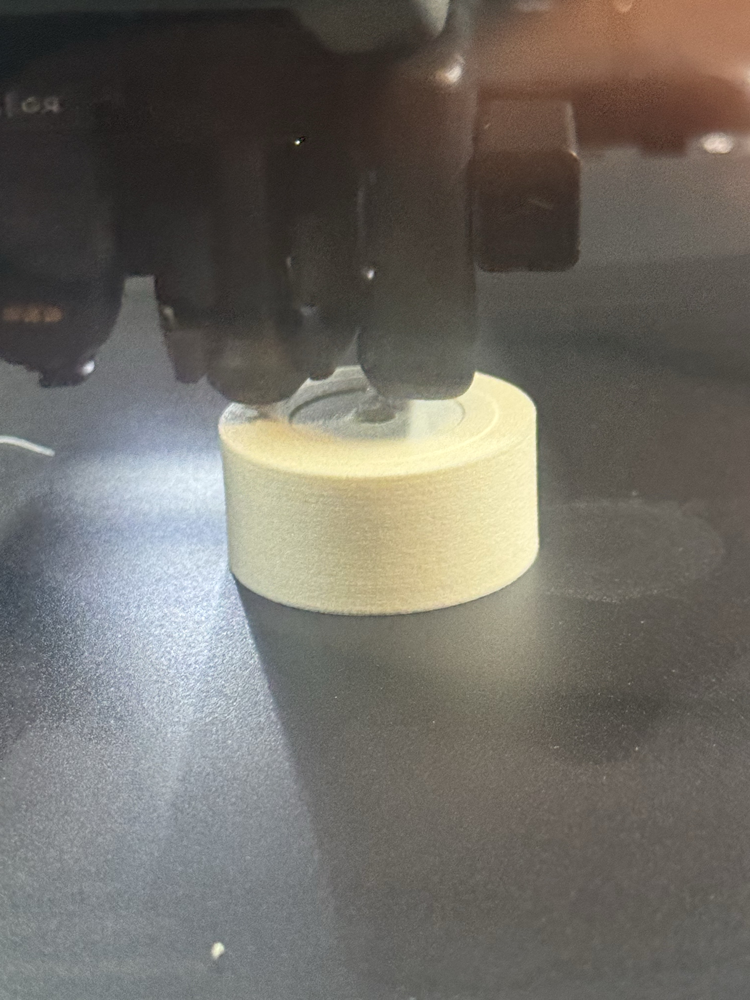

What is recorded
Mark2 task 1306080180 identifies the paused v1 article. Its pocket and emitted pause belong to that frozen source.

| v1 pocket | 3.40 mm · frozen native source |
| v1 insertion / first cover | After layer 79 at Z15.8 / layer 80 at Z16.0 mm |
| v1 slice estimate | 88 minutes · manual pause excluded |
| Operator result | Ring insertion worked; first covering layer was tight, second deposited well |
| Printed-float reed bench report | 20 mm usable; 21-24 mm intermittent; 25 mm absent Datum: nearest float edge to reed center |
Limits of these results
Final cooled roof, density, buoyancy, retained signal, liquid uptake, pressure life and flavor compatibility are unreported. The reed bench report does not identify its reed, wall fixture or repeat count.
The current sizing model assumes 0.65 g/cm³ Aero: about 22.75 g assembled mass and 5.23 g spare lift. These are calculations, not measurements.